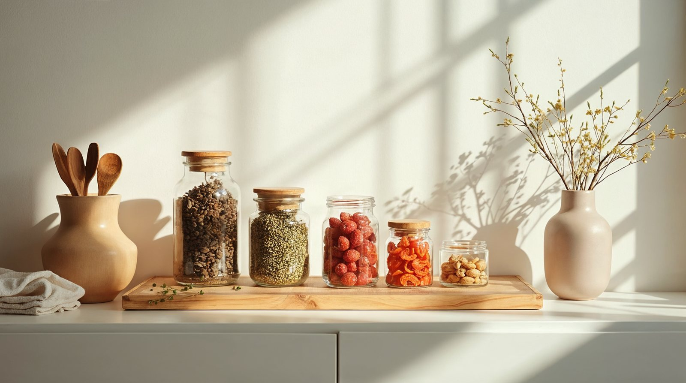

이종호 한의사 감수좋은꿈참사랑한의원 대표원장 (한의사 면허번호 19769)발행 2026-11-23 · 수정 2026-11-27
이 글의 차례
- 왜 같은 증상에도 진단이 먼저일까요
- 자주 하는 오해
- 예를 들면 이런 경우입니다
- 먼저 이렇게 여쭙니다
- 한의원에서 참고하는 것
- 스스로 점검해 보세요
- 일상에서 먼저 해 볼 수 있는 것
- 진찰에서 본 것이 처방으로 어떻게 이어지나요?
- 진찰 뒤 한약을 권하지 않을 때도 있습니다
- 증상을 이렇게 나눠 말씀해 주세요
- 같은 분이라도 처방이 바뀌는 이유
- 검사 결과는 처방에 어떻게 쓰이나요?
- 체질적 경향은 어디까지 참고하나요?
- 첫 진찰이 조금 길게 느껴지는 까닭
- 다른 곳에서 드셨던 한약이 있다면
- 처방을 정한 뒤 설명드리는 것
- 한의원에서 함께 살필 수 있는 경우
- 복용한 뒤에도 보는 이유
- 얼마나 지켜보고, 언제 상담하면 좋을까요
- 이렇게 기록해 오시면 상담이 쉬워집니다
- 이런 증상은 먼저 확인이 필요합니다
- 함께 읽으면 좋은 글
같은 "피곤하다"는 말도 사람마다 이유가 달라요. 누구는 잠이 모자라서, 누구는 일이 너무 많아서, 또 누구는 끼니가 부실해서 피곤하거든요. 증상은 같아도 원인은 다른 얘기예요.
그래서 저는 한약을 약재부터 고르지 않아요. 지금 몸 상태를 먼저 살펴본 뒤 처방할지, 어떤 처방이 맞을지를 정합니다. 진찰 결과 한약이 필요하지 않다고 안내드리는 경우도 있어요. 약을 지으러 오셨는데 약이 필요 없다는 말을 들으면 서운하실 수 있지만, 그것도 진찰이 하는 일이라고 생각해요.
왜 같은 증상에도 진단이 먼저일까요
한약 상담을 찾게 되는 불편은 같은 이름이어도 뿌리가 다를 수 있습니다.
- 피로는 잠 부족, 소화 불편, 빈혈이나 갑상선 같은 몸의 변화, 오래 쌓인 긴장 등 이유가 여러 가지입니다.
- 소화 불편도 식사 시각과 양, 스트레스, 복용 중인 약에 따라 모습이 달라집니다.
- 손발이 찬 느낌도 활동량, 체중 변화, 혈액순환과 관련된 질환 등 원인이 다양합니다.
- 그래서 증상 이름만으로 처방을 정하면 맞지 않는 약을 드시게 될 수 있습니다.

자주 하는 오해
- 몸에 좋은 약재를 넣으면 누구에게나 좋다고 여기기 쉽지만, 같은 약재도 사람마다 맞지 않을 수 있어 몸 상태를 먼저 봅니다.
- 한약은 오래 먹을수록 좋다고 생각하기 쉽지만, 복용 기간은 증상과 처방 목적, 복용 뒤 상태에 따라 다르고 중간에 확인하며 조절합니다.
- 체질만 알면 처방이 정해진다고 여기기 쉽지만, 체질적 경향은 참고 자료일 뿐 지금의 증상과 생활을 함께 봅니다.
- 양약과 한약은 절대 함께 먹으면 안 된다고 생각하기 쉽지만, 많은 경우 가능하며 복용 중인 약을 모두 알려 주시면 상호작용을 확인합니다.
예를 들면 이런 경우입니다
- 예를 들어 늘 피곤해서 보약을 원하시는 직장인이라면, 잠과 식사, 최근 검진 결과부터 여쭙고 피로의 이유가 어디에 있는지 먼저 찾습니다.
- 예를 들어 소화가 잘 안 되고 손발이 찬 분이라면, 식사 시간과 양, 대소변, 몸의 온기를 함께 살펴 처방 방향을 정합니다.
- 예를 들어 혈압약을 드시는 어르신이라면, 약 이름과 용량을 확인하고 복용 시간 간격을 함께 안내합니다.
먼저 이렇게 여쭙니다
- 불편이 언제부터, 어떤 때 심해지나요?
- 잠, 소화, 대소변, 식욕, 땀은 어떤가요?
- 여성은 생리 주기와 양에 변화가 있나요? 임신 가능성이 있나요?
- 복용 중인 약과 영양제, 알레르기가 있나요?
- 간이나 신장 질환이 있거나 관련 수치를 들은 적이 있나요?
한의원에서 참고하는 것
- 맥진: 맥이 뛰는 느낌을 손끝으로 살핍니다.
- 문진: 증상이 언제부터, 어떤 때 심해지는지와 생활 전반을 여쭙니다.
- 설진: 혀의 색, 모양, 설태를 봅니다. 자세한 내용은 설진 안내 글을 참고하세요.
- 복진: 배의 긴장도와 눌렀을 때의 반응을 확인합니다.
- 검사 결과: 이미 받은 혈액·영상 검사 결과가 있으면 참고합니다.
- 체질적 경향: 한 가지로 단정하지 않고 참고 자료로만 씁니다.
스스로 점검해 보세요
- 피로나 소화 불편이 몇 주 넘게 이어진다
- 검사에서 큰 이상은 없다고 들었다
- 잠, 식사, 대소변 가운데 흔들리는 것이 있다
- 복용 중인 양약이나 영양제가 있다
- 예전에 한약을 먹고 불편했던 적이 있다
- 임신 중이거나 수유 중이거나 계획 중이다
해당 항목은 진료 때 말씀해 주시면 처방을 정하는 바탕이 됩니다.

일상에서 먼저 해 볼 수 있는 것
- 최근 건강검진 결과지를 챙기기
- 지금 먹는 약과 영양제 목록 만들기(약 목록 정리법)
- 불편한 증상을 날짜와 함께 메모하기(증상 기록 요령)
- 상담 전 1~2주 동안의 식사 시각과 잠을 짧게 적어 두기
진찰에서 본 것이 처방으로 어떻게 이어지나요?
진찰은 정답을 맞히는 시험이 아니라 여러 단서를 겹쳐 보는 과정에 가깝습니다. 맥과 혀, 배, 생활 이야기가 한 방향을 가리키면 처방의 방향을 정하고, 서로 엇갈리면 더 여쭙거나 검사 결과를 먼저 봅니다.
- 예를 들어 똑같이 피곤하다고 하셔도 식사 뒤 늘 더부룩하고 대변이 묽으며 배가 차갑게 만져진다면, 기운을 채우기보다 소화를 먼저 돕는 쪽을 생각합니다.
- 예를 들어 피곤한데 입이 마르고 밤에 몸이 달아오르며 잠이 얕다면, 같은 피로라도 다른 약재 구성을 떠올리게 됩니다.
- 예를 들어 피로와 함께 긴장할 때마다 가슴이 답답하고 옆구리가 결린다면, 막힌 흐름을 풀어 주는 방향을 함께 살핍니다.
이처럼 증상 이름은 같아도 함께 나타나는 신호가 다르면 처방의 방향도 달라집니다. 제가 진찰 전에 처방 이름부터 말씀드리지 않는 까닭이 여기에 있습니다.
진찰 뒤 한약을 권하지 않을 때도 있습니다
진찰을 먼저 한다는 것은 한약을 쓰지 않는 결론도 열어 둔다는 뜻입니다. 저는 아래 같은 경우에는 처방을 미루거나 다른 길을 먼저 말씀드립니다.
- 피로나 소화 불편의 이유가 잠 부족, 끼니 거름처럼 생활에 뚜렷하게 있어 그것부터 바꿔 볼 만한 경우
- 혈액검사나 내시경처럼 병원 검사로 먼저 확인해야 할 부분이 보이는 경우
- 이미 드시는 약이 많아 복용 간격과 순서를 먼저 정리해야 하는 경우
- 임신 중이거나 임신 가능성이 있는 경우(먼저 말씀해 주시고, 산부인과 선생님과도 상의해 주세요)
- 감기나 장염처럼 잠깐 지나가는 불편이 겹쳐 있어 그 시기를 넘긴 뒤 보는 편이 좋은 경우
처방하지 않는다고 진료가 끝나는 것은 아닙니다. 생활에서 무엇을 먼저 바꿔 볼지, 언제 다시 보면 좋을지를 함께 정해 드립니다.
증상을 이렇게 나눠 말씀해 주세요
진료실에서 "그냥 다 힘들어요"라는 말씀을 자주 듣습니다. 그 마음은 충분히 이해합니다. 다만 조금만 나눠 말씀해 주시면 같은 피로 안에서도 어느 쪽이 먼저인지 훨씬 잘 보입니다.
- 언제: 아침에 일어날 때부터인지, 오후 서너 시쯤부터인지
- 얼마나: 10점 만점에 몇 점쯤인지, 쉬면 몇 점으로 내려가는지
- 무엇을 못 하게 되는지: 계단을 피하게 되는지, 퇴근 뒤 아무것도 못 하는지
- 함께 오는 것: 그 무렵 속이 더부룩한지, 머리가 무거운지, 손발이 찬지
- 예전과 비교: 반년 전, 1년 전의 나와 견주면 무엇이 가장 달라졌는지
이렇게 나눠 듣다 보면 처음에는 피로가 문제라고 하셨던 분이 사실은 잠이 쪼개지는 것이 가장 힘들었다고 말씀하시기도 합니다. 그 한마디가 처방의 방향을 바꾸기도 합니다.
같은 분이라도 처방이 바뀌는 이유
처음 진찰로 정한 처방이 끝까지 그대로 가는 경우만 있는 것은 아닙니다. 계절이 바뀌거나, 일이 몰리는 시기가 지나거나, 잠이 조금씩 자리를 잡으면 몸이 보내는 신호도 달라집니다.
그래서 다시 오실 때마다 맥을 새로 짚습니다. 지난번에는 소화를 먼저 살폈다면, 다음에는 잠이나 기운 쪽으로 무게를 옮기기도 합니다. 진단은 한 번으로 끝나는 절차가 아니라 드시는 동안 이어지는 대화라고 생각합니다.
검사 결과는 처방에 어떻게 쓰이나요?
이미 받으신 혈액검사나 건강검진 결과는 진찰을 대신하지는 않지만, 처방을 정할 때 놓치기 쉬운 부분을 채워 줍니다. 결과지를 가져오시면 저는 특히 아래 항목을 눈여겨봅니다.
- 간 수치: 높게 나온 적이 있다면 약재와 복용 기간을 더 조심스럽게 정하고, 필요하면 다시 검사받으실 시기도 함께 이야기합니다.
- 신장 수치: 신장 기능에 대해 들은 이야기가 있다면 처방의 양과 구성을 더 신중하게 봅니다.
- 빈혈, 갑상선, 혈당: 피로의 이유가 여기에 있을 수 있어, 해당 진료과 진료를 함께 받으시도록 안내하기도 합니다.
결과지가 없어도 진료는 가능합니다. 다만 진찰하면서 검사가 필요해 보이면 어떤 검사를 어디에서 받으면 좋을지 말씀드립니다.
체질적 경향은 어디까지 참고하나요?
평소 더위를 많이 타는지 추위를 많이 타는지, 땀이 많은지, 소화가 예민한지 같은 오래된 경향은 처방을 정할 때 참고가 됩니다. 같은 약재라도 이런 경향에 따라 편하게 받아들이는 정도가 달라질 수 있기 때문입니다.
하지만 경향은 바탕일 뿐, 지금의 상태가 늘 같지는 않습니다. 평소 몸이 찬 분이라도 요즘 긴장이 겹쳐 얼굴로 열이 오를 수 있고, 열이 많던 분도 지친 시기에는 쉽게 추위를 탈 수 있습니다. 그래서 저는 오래된 경향과 지금 몸이 보내는 신호를 나란히 놓고 봅니다.
첫 진찰이 조금 길게 느껴지는 까닭
처음 오신 분 가운데는 질문이 많다고 느끼시는 분도 있습니다. 잠과 대소변, 생리, 복용 중인 약까지 여쭙는 것은 한약이 몸 전체에 영향을 주기 때문입니다.
이 시간을 들여야 맞지 않는 처방을 줄일 수 있고, 다음 진료에서도 무엇이 달라졌는지 견줄 기준이 생깁니다. 궁금한 점이 있으면 중간에 언제든 편하게 물어 주세요.
다른 곳에서 드셨던 한약이 있다면
예전에 한약을 드신 적이 있다면 그때의 경험도 진단에 쓰이는 소중한 정보입니다. 처방 이름을 모르셔도 괜찮습니다. 언제쯤, 어떤 불편 때문에, 얼마 동안 드셨는지, 드시는 동안 속과 잠, 대변이 어땠는지만 떠올려 주세요.
드시고 얼굴이 달아오르거나 속이 더부룩했던 기억이 있다면 특히 중요합니다. 같은 방향의 약재를 피하거나 양을 조심스럽게 정하는 데 바로 참고합니다. 남은 파우치나 설명서가 있다면 사진으로 찍어 오셔도 좋습니다.
처방을 정한 뒤 설명드리는 것
처방이 정해지면 왜 이 방향을 골랐는지 진찰에서 본 내용과 함께 말씀드립니다. 어떤 불편을 먼저 살피는 처방인지, 드시는 동안 무엇을 눈여겨보면 좋은지, 다음에는 언제 맥을 다시 짚을지까지 함께 정합니다. 설명이 어렵게 느껴지면 몇 번이고 다시 여쭤 주세요.
처방을 받지 않기로 정한 날에도 마찬가지입니다. 왜 지금은 한약보다 다른 것이 먼저인지, 무엇이 달라지면 다시 상의하면 좋을지 설명을 들으시고 돌아가실 수 있도록 하겠습니다.
한의원에서 함께 살필 수 있는 경우
- 피로나 소화 불편이 오래 이어지는데 검사에서 큰 이상은 없다고 들은 경우
- 한약을 드셔 본 적이 있는데 맞는지 다시 확인하고 싶은 경우
- 양약을 드시는 중이라 함께 먹어도 되는지 궁금한 경우
좋은꿈참사랑한의원에서는 모든 분의 맥을 먼저 짚고, 불편한 점과 생활을 충분히 들으며 설진·복진으로 몸 상태를 살핀 뒤 한약이 필요한지, 필요하다면 어떤 처방이 맞는지 정합니다. 한약은 원내에서 달이며 대표원장이 약재를 직접 검수합니다.
복용한 뒤에도 보는 이유
한약은 드시고 나서 몸이 어떻게 반응하는지가 중요합니다. 속이 편한지, 잠이 달라졌는지, 불편한 점은 없는지를 다음 진료에서 함께 이야기하며 필요하면 처방을 조정합니다.
첫 방문에는 모든 분의 맥을 먼저 짚고, 불편한 점과 생활을 들은 뒤 혀와 배를 살핍니다. 이미 받은 혈액·영상 검사 결과가 있으면 함께 보고, 한약이 필요한지, 필요하다면 어떤 처방이 맞는지 정해 설명해 드립니다. 복용 중간에 다시 오시면 진맥으로 그날 몸 상태를 다시 확인하고, 지난번 이야기부터 이어서 여쭈며 처방을 이어 갈지 정합니다.
얼마나 지켜보고, 언제 상담하면 좋을까요
- 한약을 드시기 시작하면 첫 1~2주 동안 속이 편한지, 잠과 대소변이 어떤지 짧게 적어 두세요.
- 복용 중 속이 불편하거나 두드러기, 심한 설사, 피부나 눈이 노래지거나 소변 색이 진해지는 변화가 생기면 다음 진료를 기다리지 말고 복용을 멈춘 뒤 연락해 주세요.
- 한약을 드신 뒤 숨쉬기 힘들거나 얼굴·입술이 부으면 바로 복용을 멈추고 가까운 응급실로 가세요.
- 피로와 함께 체중이 이유 없이 빠지거나, 조금만 움직여도 숨이 차고 어지럽다면 내과 진료를 먼저 받으세요.
이렇게 기록해 오시면 상담이 쉬워집니다
진료실에서 갑자기 물어보면 잘 기억이 안 나는 게 원래 그래요. 지난주에 몇 번 깼는지, 속이 언제 더부룩했는지 바로 떠올리기는 누구라도 어렵거든요. 그래서 아래 몇 가지만 미리 적어 오시면 진찰이 한결 수월해져요.
- 가장 불편한 증상 두세 가지와 시작된 시기
- 1~2주 동안의 잠, 식사, 대변 상태
- 복용 중인 약과 영양제 이름(약 봉투 사진도 좋습니다)
- 예전에 한약을 드시고 불편했던 경험
맥과 혀, 배를 살피고 처방 방향을 정하는 건 제 일이에요. 그 대신 한 가지만 해 주세요. 지금 드시는 약과 영양제 봉투를 휴대전화로 한 장씩 찍어 두시는 거예요. 이름이 비슷한 약이 많아서, 사진 한 장이 기억보다 훨씬 정확하거든요.
나머지는 생각나는 만큼만 적어 오셔도 괜찮아요. 빈칸이 있으면 진료실에서 같이 채우면 되니까요. 궁금한 건 그냥 아무거나 편하게 물어보세요.
이런 증상은 먼저 확인이 필요합니다
- 갑작스러운 가슴 통증, 호흡곤란, 심한 두통, 한쪽 팔다리 마비처럼 응급이 의심되는 경우(바로 가까운 응급실)
- 원인 모를 체중 감소나 혈변이 있는 경우
이런 신호가 있으면 한의원보다 가까운 병원이나 응급실을 먼저 찾으세요.
함께 읽으면 좋은 글

여쭙는 것
- 불편이 언제부터, 어떤 때 심해지나요?
- 잠, 소화, 대소변, 식욕, 땀은 어떤가요?
- 여성은 생리 주기와 양에 변화가 있나요? 임신 가능성이 있나요?
생활에서 해 볼 것
- 최근 건강검진 결과지를 챙기기
- 지금 먹는 약과 영양제 목록 만들기(약 목록 정리법)
- 불편한 증상을 날짜와 함께 메모하기(증상 기록 요령)
한의원에서 함께 살필 것
- 피로나 소화 불편이 오래 이어지는데 검사에서 큰 이상은 없다고 들은 경우
- 한약을 드셔 본 적이 있는데 맞는지 다시 확인하고 싶은 경우
- 양약을 드시는 중이라 함께 먹어도 되는지 궁금한 경우
먼저 확인이 필요한 신호
- 갑작스러운 가슴 통증, 호흡곤란, 심한 두통, 한쪽 팔다리 마비처럼 응급이 의심되는…
- 원인 모를 체중 감소나 혈변이 있는 경우
한눈에 보는 표
| 구분 | 핵심 |
|---|---|
| 여쭙는 것 | 불편이 언제부터, 어떤 때 심해지나요? 잠, 소화, 대소변, 식욕, 땀은 어떤가요? |
| 생활에서 해 볼 것 | 최근 건강검진 결과지를 챙기기 지금 먹는 약과 영양제 목록 만들기(약 목록 정리법) |
| 한의원에서 함께 살필 것 | 피로나 소화 불편이 오래 이어지는데 검사에서 큰 이상은 없다고 들은 경우 한약을 드셔 본 적이 있는데 맞는지 다시 확인하고 싶은 경우 |
| 먼저 확인이 필요한 신호 | 갑작스러운 가슴 통증, 호흡곤란, 심한 두통, 한쪽 팔다리 마비처럼 응급이 의심되는 경우(바로 가까운 응급실) 원인 모를 체중 감소나 혈변이 있는 경우 |
자주 묻는 질문
한약은 처음 와서 바로 지을 수 있나요?
문진과 진찰을 먼저 하고, 필요하다고 판단될 때 처방합니다. 진찰 결과에 따라 한약이 필요하지 않다고 안내할 수도 있습니다.
양약을 먹고 있어도 한약을 먹을 수 있나요?
복용 중인 약을 모두 알려 주세요. 함께 드셔도 되는지와 시간 간격을 살피며, 양약은 처방한 의사와 상의 없이 줄이거나 끊지 않습니다.
검사 결과가 없으면 진료받기 어렵나요?
아닙니다. 검사 결과는 참고 자료일 뿐이며 없어도 진료는 가능합니다.
한약을 먹으면 간이 나빠지나요?
간 질환이 있거나 걱정되시면 미리 알려 주세요. 처방 때 간·신장 상태를 고려하며, 복용 중 피부나 눈이 노래지거나 소변 색이 진해지는 등 이상이 있으면 바로 중단하고 연락해 주세요.
좋은꿈참사랑한의원은 재진 때 지난번 이야기부터 이어서 여쭙니다. 진료시간과 예약은 오시는 길에서 확인하세요.
어디서 상담받을 수 있나요?
좋은꿈참사랑한의원은 서울 동작구 만양로2길 2 신성빌딩 3층·5층(서울 동작구 상도동, 7호선 상도역 3번 출구 근처)에 있습니다. 한의사 3명(이종호 대표원장, 조영기 수석진료원장, 정원영 진료원장)이 진료합니다. 진료시간은 평일 09:30~20:00(점심 13:00~14:00), 토·일·공휴일 09:30~15:00이며, 방문 전 전화로 확인을 권합니다. 예약은 네이버 예약, 카카오톡 상담, 전화 02-815-7510로 받습니다.
이 글은 일반적인 건강 정보이며 개인의 진단이나 치료를 대신하지 않습니다. 증상이 있거나 복용 중인 약이 있다면 진료를 통해 확인하세요. 치료 효과는 개인마다 다를 수 있습니다.
작성 기준: 일반적으로 알려져 있는 건강 정보를 참고해 정리했습니다(대표원장 감수). 증상 기록은 1~2주 동안 하루 1회, 비슷한 시간에 적어 오시면 지난 상태와 비교하기 쉽습니다.